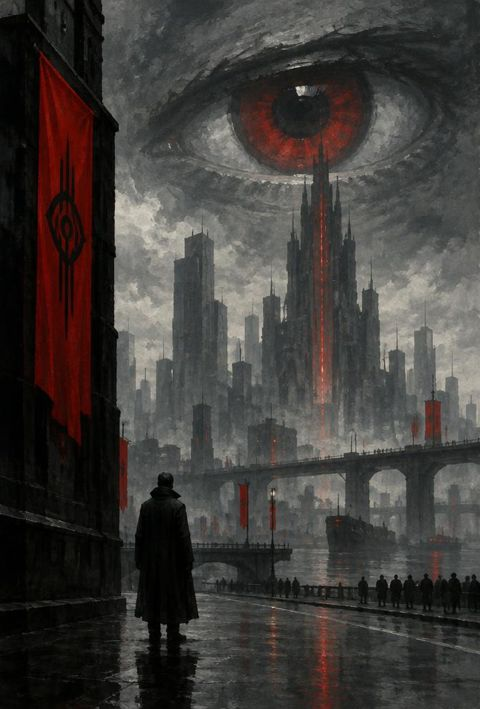

Kutubxonamizga xush kelibsiz
Bu yerda siz o'zbek va jahon adabiyotining eng sara asarlarini topasiz.
"Kitob o'qigan inson hech qachon yolg'iz qolmaydi."
Kitoblar
1 250+
Turli janrdagi kitoblar
O'quvchilar
3 400
Faol a'zolar
Ish vaqti
09:00–20:00
Dushanba – Shanba
Mashhur kitoblar

O'tkan kunlar
Abdulla Qodiriy
Badiiy 4.9
Kecha va kunduz
Cho'lpon
Badiiy 4.7
Boburnoma
Zahiriddin Bobur
Tarix 4.8
Sariq devni minib
Xudoyberdi To'xtaboyev
Bolalar 4.6Nega kitob o'qish kerak?
- Bilimni oshiradi
- Xotirani mustahkamlaydi
- Nutqni boyitadi